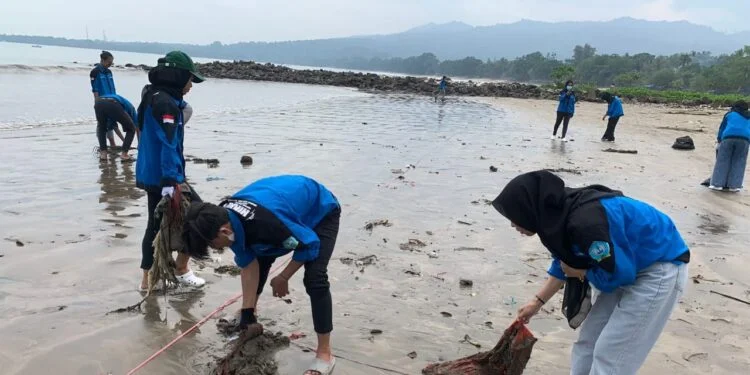

Himapi Gelar Geber Pantai sebagai Bentuk Peduli Alam
Himpunan Mahasiswa Perikanan (Himapi) Universitas Sultan Ageng Tirtayasa (Untirta) telah menggelar Gerakan Bersih (Geber) Pantai pada (24/6) di pantai Lagundi, Carita. Acara ini merupakan bentuk kepedulian Himapi terhadap pesisir pantai.
Putri Yohana Sihombing, sebagai Ketua Pelaksana. Ia mengungkapkan acara ini merupakan bentuk peringatan hari laut sedunia.
“Geber Pantai merupakan kegiatan untuk menjaga kelestarian lingkungan pesisir pantai, dimana acara Geber pantai ini sekaligus memperingati hari laut sedunia pada tanggal 8 Juni lalu,” ungkap Putri. Putri mengatakan dalam pelaksanaannya terdapat sedikit kendala.
“Di daerah pantai tersebut tidak ada Tempat Pembuangan Sampah (TPS), maka dari itu kami membuangnya dengan cara menguburkan sampah-sampah di lokasi tersebut,” sebutnya.
Muhamad Raihan Al Fath, Ketua Umum Himapi, mengatakan acara ini bertujuan untuk meningkatkan partisipasi masyarakat akan pengendalian pencemaran laut.
“Dengan tujuan agar meningkatkan kepedulian dan partisipasi masyarakat dalam mengendalikan pencemaran pesisir dan laut, terutama yang bersumber dari sampah plastik,” tutur Raihan.
Tidak hanya kegiatan pembersihan pantai, Raihan, mengatakan bahwa beberapa cara dilakukan untuk membentuk kepedulian masyarakat terhadap pantai dan laut.
“Ada beberapa cara yang kita lakukan untuk masyarakat agar lebih peduli terhadap lingkungan pesisir pantai dari sampah, salah satunya dengan mengadakan kegiatan edukasi melalui webinar yang bekerja sama dengan Asosiasi Daur Ulang Plastik Indonesia (Adupi),” ujarnya.
← Kembali ke Beranda